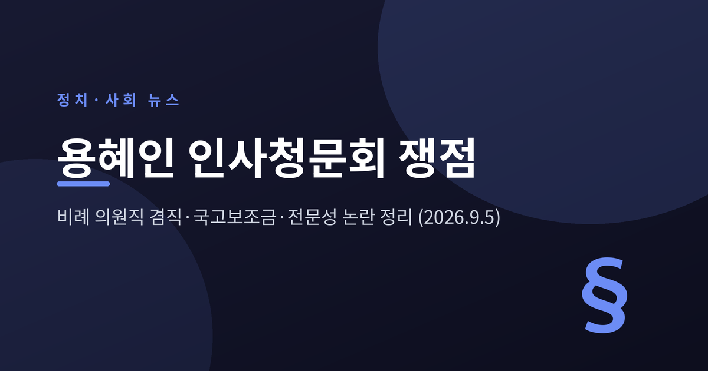
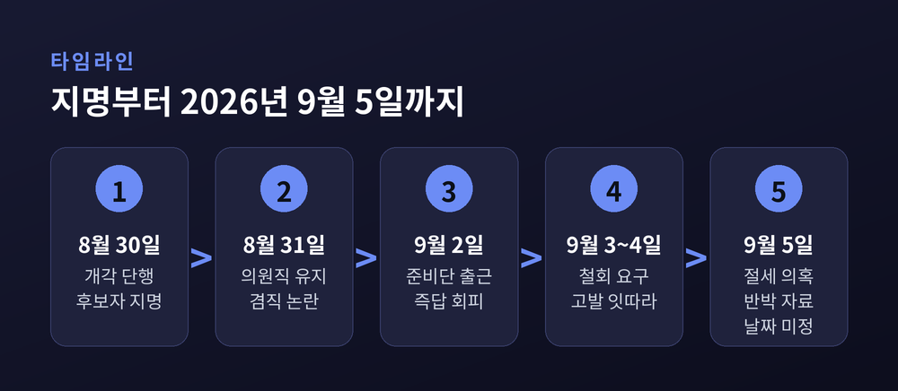
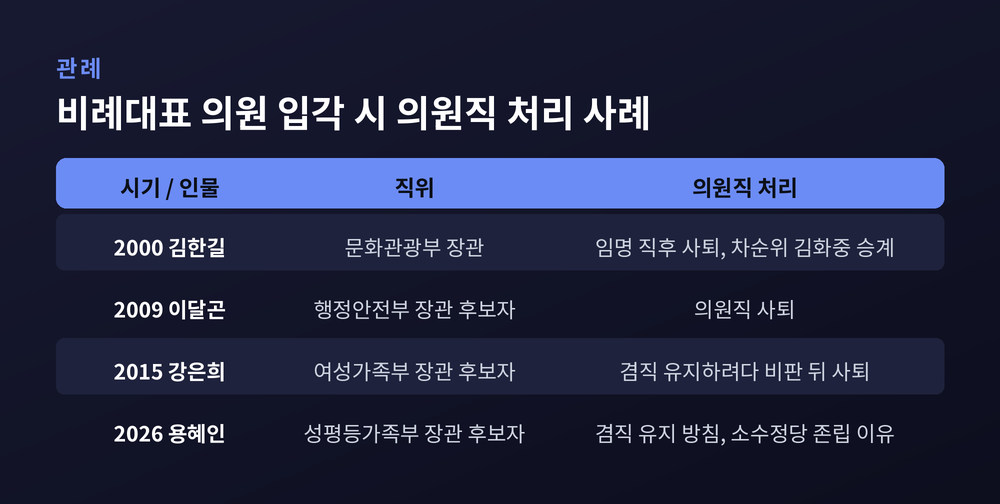
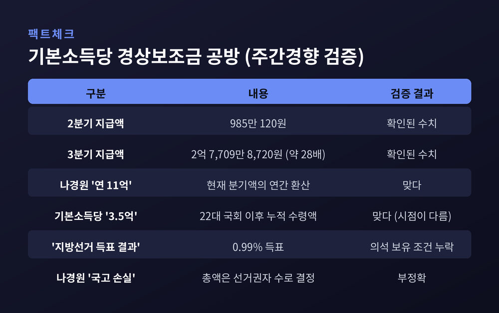
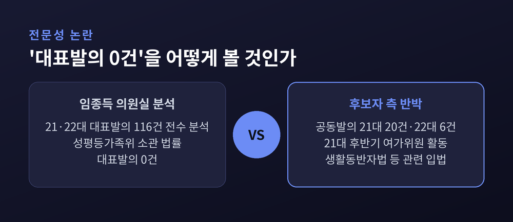
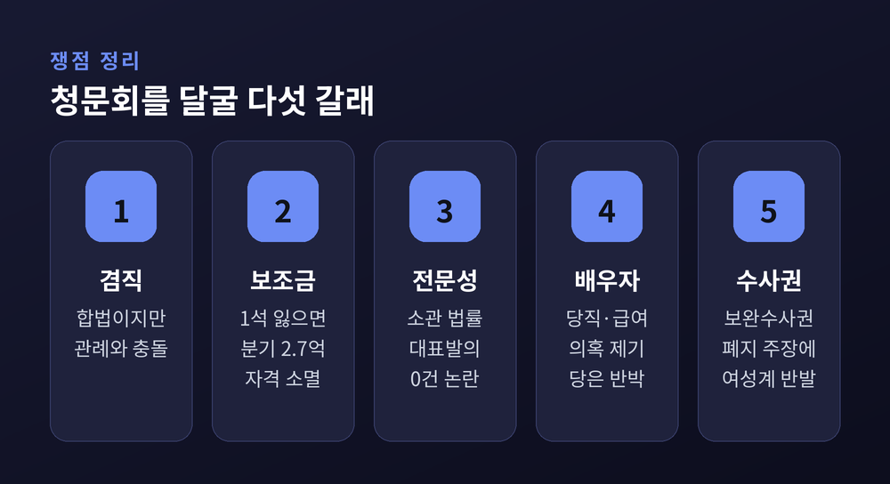
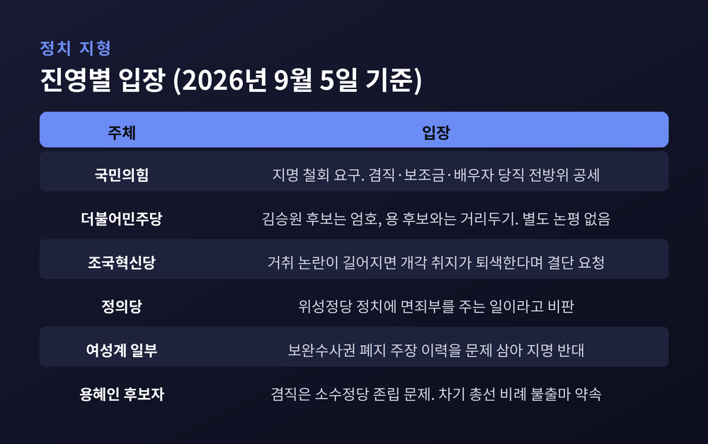

이번 글에서는 용혜인 성평등가족부 장관 후보자를 둘러싼 인사청문회 쟁점을 정리해 보겠습니다. 지명 엿새 만에 논점이 대여섯 갈래로 갈라졌습니다. 어느 편을 들기보다, 무엇이 확인된 사실이고 무엇이 아직 주장에 머물러 있는지 나눠 보려 합니다.

이재명 대통령은 2026년 8월 30일 6개 부처 개각을 단행했습니다. 공석이던 성평등가족부 장관 후보자로 기본소득당 용혜인 의원이 지명됐습니다.
용 후보자는 1990년생입니다. 임명될 경우 이재명 정부의 첫 1990년대생 장관이 됩니다. 오마이뉴스는 헌정사 최연소 국무위원 기록이 된다고 전했습니다.
상징성은 컸습니다. 그러나 논란은 지명 다음 날부터 시작됐습니다.
8월 31일, 용 후보자가 입각 후에도 비례대표 의원직을 유지하겠다는 뜻이 알려졌습니다. 9월 2일에는 서울 서대문구 한국청소년활동진흥원에 마련된 청문회 준비사무실로 첫 출근했습니다. 겸직을 묻는 질문에는 "청문회에서 소통하겠다"는 취지로 답했습니다.
9월 3일 장동혁 국민의힘 대표가 지명 철회를 공개 요구했고, 9월 4일 국민의힘 원내지도부가 이를 다시 촉구했습니다. 같은 기간 시민단체와 전직 지방의원의 고발이 잇따랐습니다.
엿새 사이에 벌어진 일입니다.

가장 먼저 짚어야 할 사실이 있습니다. 국회법 제29조는 의원이 국무총리 또는 국무위원 직 외의 다른 직을 겸할 수 없도록 정하고 있습니다. 뒤집어 읽으면 국무위원 겸직은 허용된다는 뜻입니다.
여야 어느 쪽도 이 점을 부정하지 않습니다. 법적으로는 문제가 없습니다.
쟁점은 관례입니다. 비례대표 의원이 의원직을 내려놓으면 공직선거법에 따라 후순위 후보자가 의석을 승계합니다. 의정 공백이 생기지 않습니다. 그래서 비례대표는 입각할 때 의원직을 사퇴하는 것이 오랜 관행으로 굳어졌습니다.
머니투데이가 정리한 선례는 이렇습니다. 2000년 김한길 문화관광부 장관은 임명 직후 전국구 의원직을 사퇴했고 차순위 김화중 의원이 승계했습니다. 2009년 이달곤 행정안전부 장관 후보자도 의원직을 내려놨습니다. 2015년 말 강은희 여성가족부 장관 후보자는 겸직을 유지하려다 여론의 비판을 받고 결국 사퇴했습니다. 이 매체는 이를 "20여 년간의 정치권 관례"로 표현했습니다.
용 후보자의 설명은 다릅니다. 그는 "당 소속 유일 국회의원인 제가 사퇴하면 기본소득당이 원외정당이 돼야 하는 어려움이 있다"며 "소수정당의 어려움에 대해 양해를 구한다"고 밝혔습니다. 차기 총선에서는 비례대표로 출마하지 않겠다는 입장도 함께 내놨습니다.
여기에 구조적 사정이 하나 더 얽혀 있습니다. 용 후보자는 2024년 총선에서 야권 비례위성정당인 더불어민주연합 소속으로 당선됐습니다. 사퇴하면 의석은 기본소득당이 아니라 차순위인 더불어민주당 소속 고재순 전 노무현재단 사무총장에게 넘어갑니다. 기본소득당으로 되돌아오지 않는 구조입니다.
반대편의 논리도 분명합니다. 김재원 국민의힘 최고위원은 비례대표는 당을 대표해 선출된 만큼 입각 시 다음 후보에게 자리를 넘기는 것이 관례였다고 지적했습니다. 정의당 양경규 대표는 위성정당으로 두 차례 국회에 들어온 정치인을 국무위원으로 발탁하는 것은 위성정당 정치에 면죄부를 주는 일이라고 비판했습니다. 경향신문은 사설에서 논란의 근원을 준연동형비례제를 악용한 위성정당으로 지목하며 23대 총선 전 법 개정을 주문했습니다.
반면 박지원 더불어민주당 의원은 사퇴하면 기본소득당이 원외정당이 된다는 점을 들어 사실상 겸직 유지에 힘을 실었습니다.
9월 4일에는 제도적 대응도 나왔습니다. 김재섭 국민의힘 의원이 비례대표 의원이 국무총리나 국무위원으로 임명되면 의원직에서 자동 퇴직하도록 하는 국회법 개정안을 발의했습니다. 승계할 후보자가 없는 경우에만 예외적으로 겸직을 허용하는 내용입니다. 언론은 이를 '용혜인 방지법'으로 불렀습니다.

의원직 유지가 정당 보조금과 얽혀 있다는 의혹이 제기되면서 숫자 공방이 벌어졌습니다. 주간경향이 양측 주장을 모두 검증했습니다.
확인된 수치는 이렇습니다. 기본소득당이 받은 경상보조금은 2026년 2분기 985만 120원이었습니다. 3분기에는 2억 7,709만 8,720원으로 늘었습니다. 약 28배입니다. 연간으로 환산하면 약 11억 800만원 규모입니다.
이유는 정치자금법 제27조에 있습니다. 직전 총선 득표율이 2% 미만인 정당이 경상보조금 총액의 2%를 우선 배분받으려면 두 조건을 동시에 채워야 합니다. 최근 지방선거에서 0.5% 이상 득표할 것, 그리고 국회 의석을 보유할 것. 기본소득당은 2026년 6·3 지방선거에서 0.99%를 얻었고 용 후보자의 1석을 갖고 있어 두 조건을 함께 충족했습니다. 중앙선관위도 용 후보자가 사퇴해 원외정당이 되면 현재 기준의 지급 대상에서 제외된다고 밝혔습니다.
주간경향의 판정은 어느 한쪽 손을 들어주지 않았습니다.
나경원 국민의힘 의원이 말한 "연 11억원"은 현재 분기 지급액을 연간으로 환산한 값으로는 맞습니다. 기본소득당이 반박한 "누적 3억 5,000만원"도 22대 국회 출범 이후 실제 수령액으로는 맞습니다. 두 숫자는 서로 다른 시점을 가리킬 뿐입니다.
다만 양쪽 모두 정확하지 않은 대목이 있었습니다. 기본소득당 측이 "지방선거 득표의 결과"라고만 설명한 것은 '국회 의석 보유'라는 필수조건을 빠뜨린 것입니다. 반대로 나 의원의 "명백한 국고 손실"이라는 표현도 정확하지 않습니다. 경상보조금 총액은 선거권자 수에 계상단가를 곱해 정해지므로, 한 정당이 빠지면 그 몫이 다른 정당에 배분될 뿐 국가 지출이 늘지는 않습니다. "4년간 40억원"이라는 계산도 2028년 총선 뒤 지급 자격이 다시 정해진다는 점을 감안하지 않은 단순 추산이었습니다.
숫자 하나가 서로 다른 이야기로 번역되는 과정을 그대로 보여주는 사례입니다.

두 번째 쟁점은 전문성입니다. 국회 성평등가족위원회 소속 임종득 국민의힘 의원실이 용 후보자의 21·22대 국회 대표발의 법안 116건을 전수 분석했습니다. 결과는 성평등가족위원회와 전신인 여성가족위원회 소관 법률 대표발의 0건이었습니다. 이 수치는 여러 매체에서 동일하게 확인됩니다.
다만 자료를 조금 더 들여다볼 필요가 있습니다. 국회 의안정보시스템 기준으로 용 후보자가 공동발의로 이름을 올린 해당 상임위 소관 법률은 21대 20건, 22대 6건입니다. 용 후보자는 21대 국회 후반기 여성가족위원으로도 활동했습니다.
후보자 측은 성평등가족부 업무와 연결되는 정책이 반드시 그 상임위 소관 법률에만 담기는 것은 아니라고 반박했습니다. 생활동반자법 발의를 예로 들며 다양한 가족 형태와 포괄적 사회 권리를 다뤄왔다고도 설명했습니다. 청와대는 발탁 당시 용 후보자를 "청년 세대와 함께 모두의 성평등으로 나아갈 적임자"라고 평가했습니다.
국민의힘은 기본소득과 재정·세제에 집중해온 인사를 성평등·가족·청소년 주무 부처 수장에 앉히는 것은 코드 인사라고 주장합니다. 청문회에서는 저출생, 경력단절, 디지털 성범죄 등 구체적 현안에 대한 정책 검증이 이어질 전망입니다.
'대표발의 0건'은 사실입니다. 그 사실을 전문성 부재로 볼 것인지, 상임위 경계로 잴 수 없는 영역으로 볼 것인지는 청문회에서 가려질 문제입니다.

세 번째 갈래는 배우자입니다. 용 후보자의 배우자 박기홍 씨는 기본소득당 전략기획부총장을 맡고 있습니다. 당 공식 회의자료에서도 활동 사실이 확인됩니다.
한국일보는 조지연 국민의힘 의원실 자료를 인용해, 2020년 1월 19일 기본소득당 창당 사흘 뒤 열린 첫 회의에서 용 후보자가 박씨를 당 사무총장에 임명했다고 보도했습니다. 당시 회의에는 용 후보자와 참관인 자격의 박씨 등 2명이 참석한 것으로 전해졌습니다. 박씨는 이후 유급 당직자로 월평균 약 300만원의 급여를 받은 것으로 알려졌습니다.
9월 3일에는 이종배 전 국민의힘 서울시의원이 용 후보자를 정치자금법 위반 혐의로 서울경찰청에 고발했습니다. 2020년부터 2024년까지 사용한 정치자금 약 5억 395만원 가운데 58.3%인 2억 9,360만원이 특별당비로 납부됐고, 그 일부가 배우자 급여로 흘러갔을 가능성이 있다는 주장입니다. 어디까지나 고발인의 주장이며 사실로 확정된 바는 없습니다.
기본소득당은 "창당 이전부터 헌신해 온 동료의 전문성과 기여를 결혼 관계를 이유로 폄훼하는 것은 부당한 정치 공세"라고 반박했습니다.
과거 논란도 다시 불려 나왔습니다. 2023년 3월 9일 제주도 가족여행을 앞두고 부모·배우자·자녀와 함께 김포공항 귀빈실을 이용한 일입니다. 한국공항공사 예규상 귀빈실은 공무 관련 일정에만 쓸 수 있고 부모는 이용 대상이 아니라는 점이 문제가 됐습니다. 당시 용 의원은 입장문을 내고 사과했습니다. 9월 2일 시민단체 서민민생대책위원회가 직권남용 등 혐의로 경찰에 고발했습니다.
9월 5일에는 당비 세액공제를 둘러싼 '꼼수 절세' 보도가 나왔고, 청문준비단이 곧바로 설명자료로 반박했습니다. "소속 정당의 유일한 국회의원으로서 책임감을 갖고 근로소득의 일부를 일반당비로 정기 납부해 왔다"는 취지입니다. 경제적 이익이 목적이었다면 당비 납입액을 줄이는 편이 합리적이라는 논리도 덧붙였습니다.
야당의 공세는 더 나아가기도 했습니다. 장동혁 대표는 9월 3일 최고위원회의에서 용 후보자의 이른바 '언더조직' 활동 의혹을 거론하며 지명 철회를 요구했습니다. 다만 이는 야당 대표의 주장이며 사실로 확인된 내용이 아닙니다. 용 후보자 측은 "인사청문회에서 상세히 말씀드리겠다"는 입장을 유지하고 있습니다.
한편 여성계의 반응이 싸늘하다는 점은 이 사안의 결이 단순한 여야 대결이 아님을 보여줍니다. 용 후보자는 그동안 검찰의 직접수사권·보완수사권 폐지를 적극 주장해왔습니다. 한국여성정치네트워크는 성폭력 피해자와 법 취약자의 구제 수단이 약해질 수 있다며 지명에 반대했습니다. 성평등가족위에서도 국민의힘은 여성 피해자의 피해를 우려했고, 민주당은 현행 제도 아래에서도 부실수사가 반복됐다며 별도의 피해자 보호 장치가 필요하다고 맞서왔습니다.

이번 국면에서 눈에 띄는 것은 더불어민주당의 태도입니다.
민주당은 김승원 법무부 장관 후보자와 용 후보자를 사실상 분리해 대응하고 있습니다. 김 후보자에 대해서는 야당의 정치공세로 규정하며 지도부가 전방위 엄호에 나섰습니다. 반면 용 후보자에 대해서는 공개적 옹호를 자제하고 있습니다. 9월 4일 최고위원회의에서도 용 후보자 관련 발언은 나오지 않았고 별도 논평도 없었습니다.
배경에는 여론 지표가 있습니다. 9월 4일 발표된 한국갤럽 조사에서 이재명 대통령의 직무수행 긍정평가는 40%로 취임 후 최저치를 기록했습니다. 20대 지지율은 25%로 처음 20%대로 내려앉았고 30대는 31%였습니다. 이 조사는 9월 1~3일 만 18세 이상 1,001명을 대상으로 진행됐으며 표본오차는 95% 신뢰수준에 ±3.1%포인트입니다.
민주당의 한 중진 의원은 자진 사퇴가 맞지 않겠느냐는 우려를 드러냈습니다. 반면 원내지도부 관계자는 "당이 다르기 때문에 본인이 결정할 부분"이라며 선을 그었습니다. 김민석 대표는 "많은 우려와 비판을 듣고 깊이 생각하고 있다"고만 말했습니다.
범여권 안에서도 목소리가 나왔습니다. 김준형 조국혁신당 원내대표는 논란이 길어질수록 성평등가족부가 할 일이 거취 논란에 묻힌다며 국민이 납득할 판단을 요청했습니다.
예전엔 인사청문 정국이 여야 대결로 단순하게 정리되곤 했습니다. 지금은 여권 내부, 진보 정당, 여성단체가 각각 다른 이유로 같은 방향의 우려를 내놓고 있습니다.

청문회 일정부터 정리하겠습니다. 국회 법제사법위원회는 9월 4일 여야 합의를 발표했습니다. 9월 15일에는 이형일 부총리 겸 재정경제부 장관 후보자, 이소영 중소벤처기업부 장관 후보자, 김승원 법무부 장관 후보자의 청문회가 열립니다. 9월 16일에는 강신철 국방부 장관 후보자와 홍지선 국토교통부 장관 후보자가 이어집니다.
6개 부처 가운데 용 후보자의 일정만 아직 확정되지 않았습니다. 매일신문은 9월 18일 또는 22일 하루 일정으로 조율 중이라고 전했습니다. 다른 후보자들과 날짜가 겹치지 않는 만큼 관심이 더 집중될 가능성이 있다는 관측도 나옵니다.
청문회가 열릴 성평등가족위원회는 김정재 국민의힘 의원이 위원장을, 강선영 국민의힘 의원이 야당 간사를, 이수진 민주당 의원이 여당 간사를 맡고 있습니다. 임종득 의원이 이미 자료를 공개한 만큼 검증전은 시작된 셈입니다.
관전 포인트는 세 가지로 좁혀집니다.
첫째, 용 후보자가 겸직 문제에 어떤 답을 내놓느냐입니다. 지금까지 그는 "청문회에서 말씀드리겠다"는 입장만 반복했습니다. 소수정당 존립이라는 명분이 관례 이탈이라는 비판을 넘어설 수 있을지가 관건입니다.
둘째, 여당의 태도 변화입니다. 민주당이 계속 거리를 둘 경우 청문 정국의 무게는 후보자 개인에게 쏠립니다.
셋째, 제도 논의로 이어질지 여부입니다. 김재섭 의원의 국회법 개정안, 경향신문이 제기한 위성정당 제도 개편 요구가 함께 놓여 있습니다. 개인의 거취를 넘어 준연동형비례제와 정당 보조금 요건까지 다시 손볼 계기가 될 수도 있습니다.
물론 한계도 인정해야 합니다. 인사청문회는 그동안 임명 강행 앞에서 실효성 논란을 거듭 겪어왔습니다. 이번에도 같은 결론으로 흘러갈 가능성은 남아 있습니다.
끝으로 한 마디만 더 드리겠습니다.
이번 사안의 핵심은 한 사람의 자격 여부에 있지 않습니다. 법은 허용하는데 관례는 금지해온 20여 년의 공백을 아무도 제도로 메우지 않았다는 점에 있습니다.
그 공백은 결국 정치의 몫으로 남습니다. 청문회가 개인의 흠결을 세는 자리에 그칠지, 제도의 구멍을 메우는 자리가 될지 물으신다면 — 아직은 답하기 이르다고 말씀드리겠습니다.